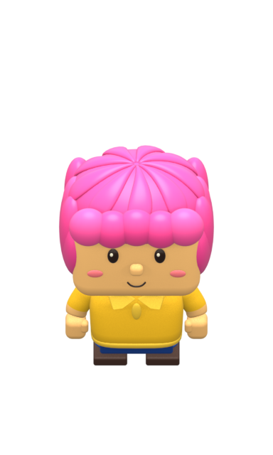
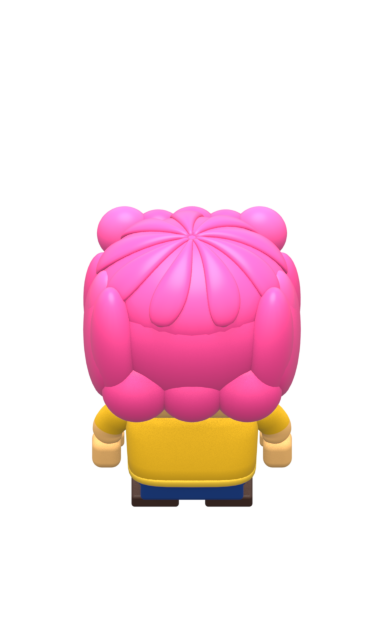
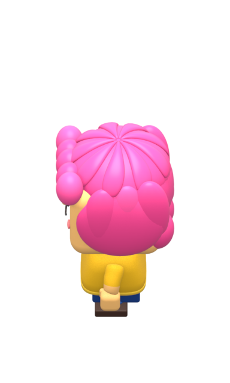
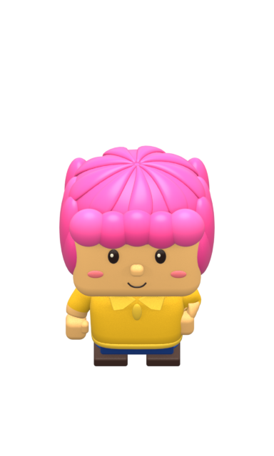
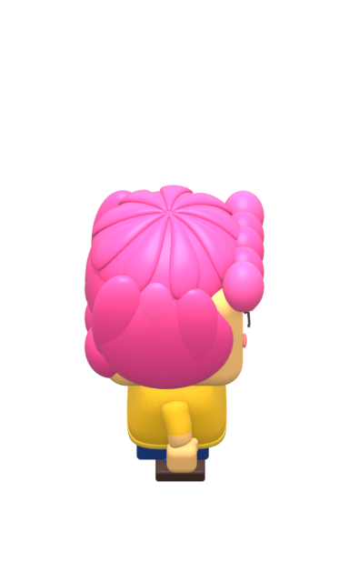
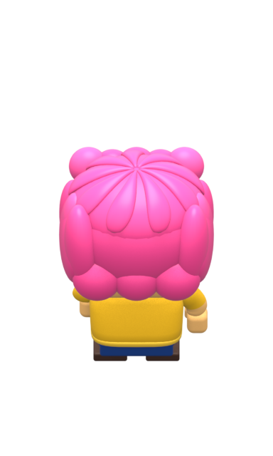
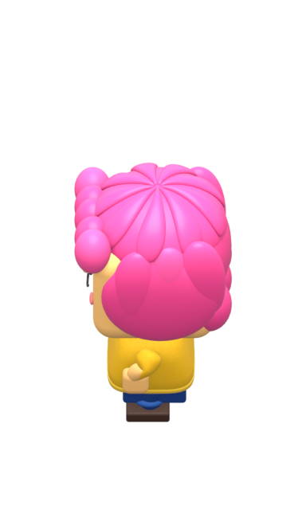

June native review · 48 clips · 12 fps APNG delays are exactly 1/12 second. Nonloop states play once. Each frame is the full unchanged native 384×640 canvas. Reload to restart nonloop clips.
stand S · loop E · loop N · loop W · loop walk S · loop E · loop N · loop W · loop seated-wait S · loop E · loop N · loop W · loop eat S · loop E · loop N · loop W · loop sit-down S · one play E · one play N · one play W · one play stand-up S · one play E · one play N · one play W · one play happy 
S · one play E · one play 
N · one play 
W · one play restless 
S · loop 
E · loop 
N · loop 
W · loop puzzled S · loop E · loop N · loop W · loop panic S · loop E · loop N · loop W · loop eat-salmon S · loop E · loop N · loop W · loop seated-wait-empty S · loop E · loop N · loop W · loop